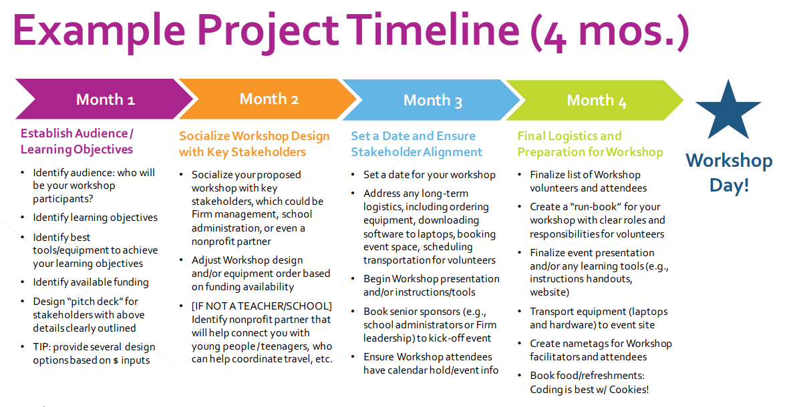
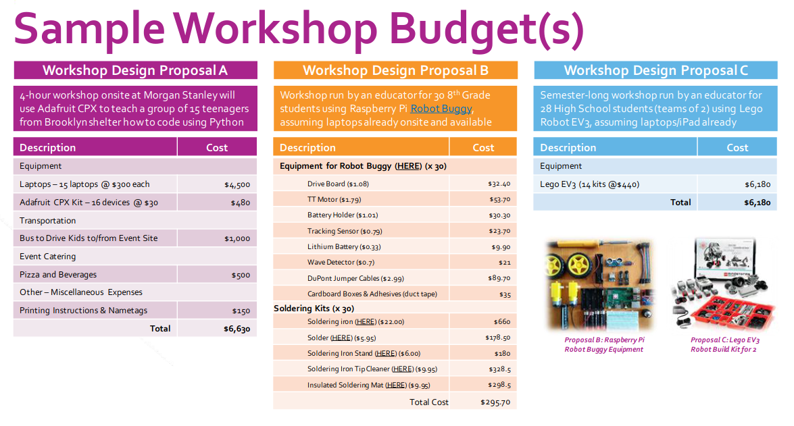

Motivation

In order to fill the tech- and science-focused roles of the future, technologists nationwide should focus on providing youth from underserved communities the resources to promote computer science advocacy now.
Students from underprivileged backgrounds are 8 to 10 times more likely to pursue college degrees in computer science if they have taken AP computer science in high school. We can project that these odds will only increase if studentds are given even earlier exposure to software and hardware technologies.
Through this Maker workshop, technologists who are passionate about bridging this gap will develop a blueprint that can be leveraged to facilitate tech exploration workshops for underserved youth in their communities. Marrying knowledge of Python programming and Adafruit Circuit Playground Express devices, their students will be empowered to become makers of technology.
Minority students in under-resourced or underperforming school districts are at risk of being left behind, a scenario that has far-reaching socioeconomic consequences for the United States.
The Case for Change
1.4m
Number of computer-science-related jobs available in 2021
400,000
Number of graduates with the skills to apply for those jobs
8-10x
Increase Likelihood that students from underserved backgrounds will pursue degrees in computer science if they have taken computer science in high school
Goals
- Unveil the magic behind technology to young people with limited access to computer science education through the Adafruit CPX.
- Draw best practices from a Morgan Stanley employee designed and run program.
- Leave with a Makerspace workshop blueprint for youth in your community.
Audience
This workshop caters to software and hardware enthusiasts. It is especially useful to those who are excited about leveraging devices to teach coding and electronics to young programmers!
- College Students
- Educators
- Corporate Technologists
- Start Up Technologists
- Non Profit Organization Technologists
- Hobbyists
- Parents with children learning from home

